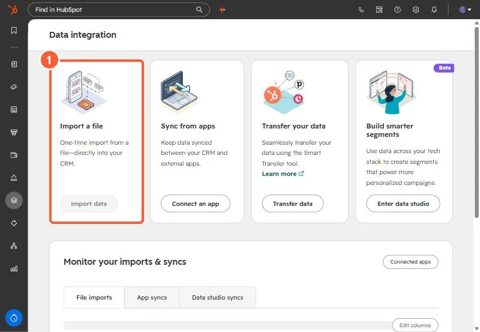
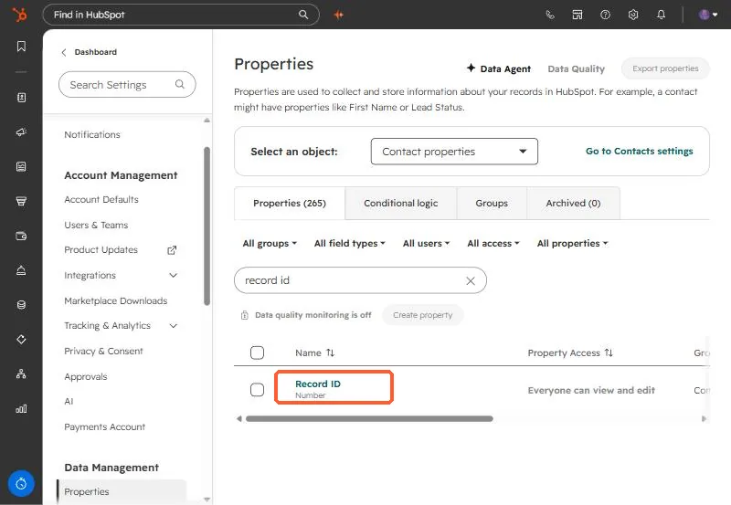
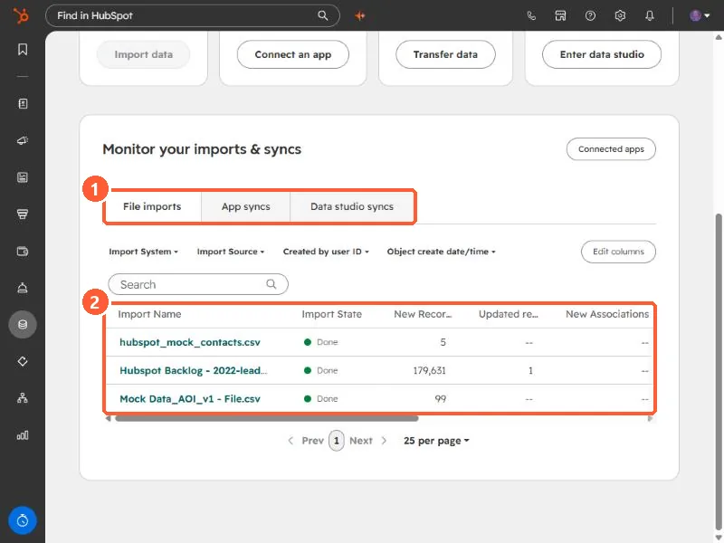
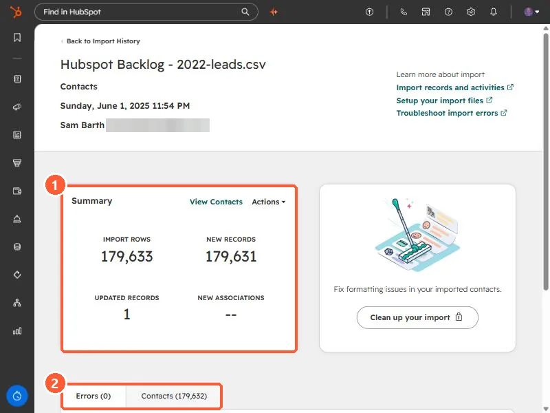
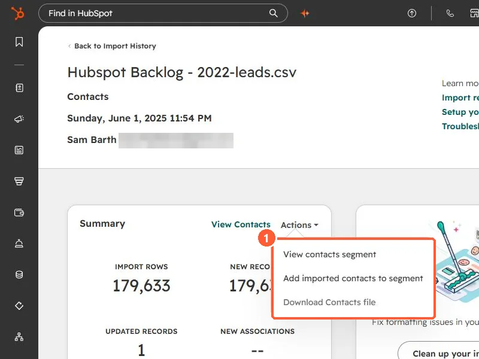
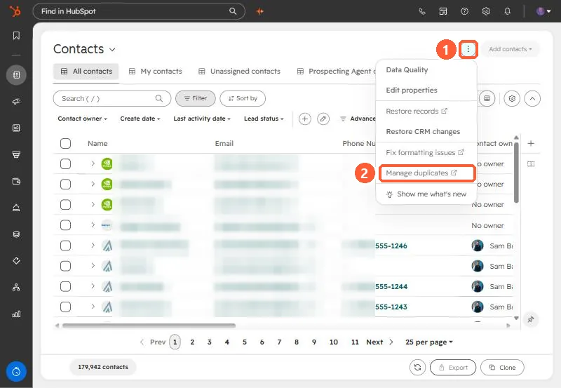
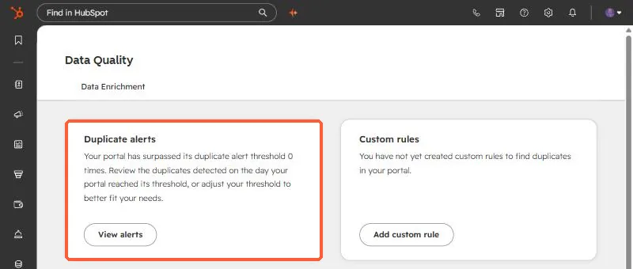
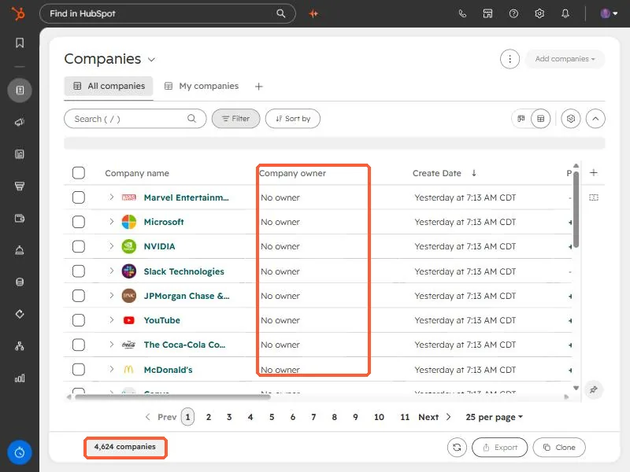

Short answer
Imports now start from Data Management, Data integration, Import a file. HubSpot only updates an existing record when the row carries a unique identifier: Email for contacts, Company domain name for companies, Record ID for any object, or a custom property that requires unique values. Without one, every row becomes a new record, which is where most duplicates come from. Paid accounts can import files up to 512 MB and 1,048,576 rows, 500 imports and 10 million rows a day. After any import, open its summary, check New against Updated, and use Actions to turn the batch into a segment.
1. Limits and file rules
| Limit | Free tools | Smart CRM, Starter, Professional, Enterprise |
|---|---|---|
| File size | 20 MB | 512 MB |
| Imports per day | 50 | 500 |
| Rows per day | 500,000 (bigger files take several days) | 10,000,000, or 80,000,000 through the imports API |
| Rows per file | 1,048,576 | |
| Running at once | 3, of which up to 2 over 10,000 rows. A fourth is queued. | |
The daily limits are a rolling 24 hours, not a reset at midnight. Every file must be CSV, XLSX or XLS, have one sheet, a header row, fewer than 1,000 columns, and UTF-8 encoding if it contains non-English characters. In Excel, date and time columns must be in Number format.
2. Start an import
Imports moved from the old Imports page to Data integration. The Import a file card starts a new one:


Then choose one file and one object, or one file with several objects (contacts and companies in the same row), and map each column to a property. On the mapping screen the identifier property shows a key icon. Map the Email column to HubSpot's Email property, not a custom text field, or HubSpot has nothing to match on.
The Choose how to import option decides what happens to existing records: create and update, create only, or update existing records only. For a column you do not want to overwrite, select Don't overwrite on its row so the import only fills empty values.
3. How HubSpot decides create or update
- Email for contacts. If a contact with that email exists, it is updated. Only mapped properties change and nothing is deleted.
- Company domain name for companies, checked against primary and secondary domains. Use the plain format, example.com, without https or www.
- Record ID for any object. If you map it, it overrides every other identifier in the file.
- A custom unique property, set on the property's Rules tab. Up to ten per object.


Things that create duplicates or skipped rows:
- No identifier column, or the column mapped to the wrong property.
- A Record ID column with blanks. Those rows create new records, even if the email matches.
- Companies created by the API or a sync app, which are not deduplicated by domain, so an import can match the wrong one or none.
- Two existing contacts with the same email. The import does not pick one; it errors on that row and skips it.
To update deals, tickets or custom objects, export them with Record ID first, edit the export, and import it back with Record ID mapped. With no email or domain to match on, export existing records with Record ID, match them to your file in a spreadsheet, and split the file into matched rows (with Record ID) and genuinely new rows.
4. Import contacts and companies together
Put each contact's Email and the company's Company domain name in the same row. HubSpot creates or updates both and associates them. To associate one record with several others, add one row per association. If you use Record IDs for more than one object, label the columns clearly, for example Record ID - Contacts. You cannot create two new records of the same object and associate them in one import; one of them must already exist. To label the association, add an association label column. See association labels.
5. Check what the import did
Scroll to Monitor your imports & syncs and open the File imports tab. You can filter by source, user and date (1), and every import is listed with its state and counts (2):


Click an import for its details. The Summary card (1) shows import rows, new records, updated records and new associations, and the Errors tab (2) lists failed rows. The import in this screenshot is the demo portal's original data load: 179,631 new contacts and 1 updated. If you import people you already had and see all new and no updates, that is a duplicate batch.


Review errors soon. HubSpot stops showing error details for imports older than one year; the count stays but the reasons are gone. The original file and use as template are available for imports completed in the last six months.
6. Turn an import into a segment
The Actions menu on the Summary card has View contacts segment, Add imported contacts to segment and Download Contacts file:


Add imported contacts to segment gives you three choices: a new static segment, an existing static segment, or a new active segment based on Import membership. Use this before anything else when an import went wrong, so you clean only what the import touched, or when a follow-up email or workflow should target exactly this batch. See active vs static segments.
7. Clean up duplicates from a bad import
On the Contacts page, open the three-dot menu (1) and choose Manage duplicates (2):




- Reviewing suggested pairs needs Professional or Enterprise and shows up to 10,000 pairs.
- Bulk merging and custom duplicate rules need Data Hub Professional or Enterprise.
- For contacts, HubSpot compares first name, last name, email, IP country, phone number, zip code and company name.
- You need Data quality tools access and edit access to all contacts, or Super Admin.
A merge cannot be undone. Spot-check pairs first, especially shared inboxes like info@. More in the duplicates guide.
8. Update-only imports: bulk-assign owners from a sheet
A common job is filling owners from a spreadsheet without touching anything else. Filter companies to Company owner is unknown so you see the real work (my demo portal shows all 4,624 companies with No owner):


- Export those companies with Record ID and match your owner file to them on a key that is unique on both sides.
- Drop rows with no owner or an unclear one, and check each owner against your HubSpot users. A name that is not a user cannot be assigned.
- Import with Record ID and Company owner mapped, Update existing records only, and Don't overwrite on the owner column.
- Open the import summary. New records should be zero. If not, some rows had no Record ID.
9. Marketing event participants
Event attendance imports from the event itself, not Data integration. Open the marketing event and use Actions, Import event contacts. The CSV needs Email, Registered, Attended and Cancelled columns, and you choose the date format and time zone for the activity during the import. It needs Marketing Hub Starter or above. For recurring events, decide whether each session is its own event before you import.
10. What is changing for 2027
- Imports sit with integrations now. Data integration puts file imports and app syncs in one place, under Monitor your imports & syncs. Old screenshots and guides that start at Contacts, Import are out of date.
- Lists are segments. The import action is Add imported contacts to segment, and the active option uses Import membership.
- The imports API moves to dated versions. It allows 80 million rows a day, eight times the interface. Scripts built on the v3 imports endpoint should plan for HubSpot's date-based versions. See API rate limits and versioning.
Common questions
Why did my import create duplicates instead of updating?
The file had no unique identifier the import could use, or it was mapped to the wrong property. Contacts need Email mapped to HubSpot's Email property, companies need Company domain name, everything else needs Record ID.
Can I undo an import?
There is no undo button. Add the imported contacts to a segment from the import's Actions menu, review them, and delete or merge from there.
Can I import straight into a static list?
Yes, by adding the imported contacts to a static segment afterwards from the import's Actions menu, either a new one or an existing one.
My import is stuck as queued.
Only three imports run at once, and only two over 10,000 rows. The fourth waits. Free accounts processing more than 500,000 rows also continue the next day.
Sources
- HubSpot Knowledge Base: Format import files
- HubSpot Knowledge Base: Understand the import tool
- HubSpot Knowledge Base: Import records for a single object
- HubSpot Knowledge Base: Import records for multiple objects
- HubSpot Knowledge Base: View and analyze past imports
- HubSpot Knowledge Base: Review and troubleshoot import errors
- HubSpot Knowledge Base: Deduplicate records in HubSpot
- HubSpot Knowledge Base: Review and manage duplicate records
- HubSpot Knowledge Base: Import marketing event participants
- HubSpot Community: Unable to import into a static list
- HubSpot Community: How to import and associate contacts with companies